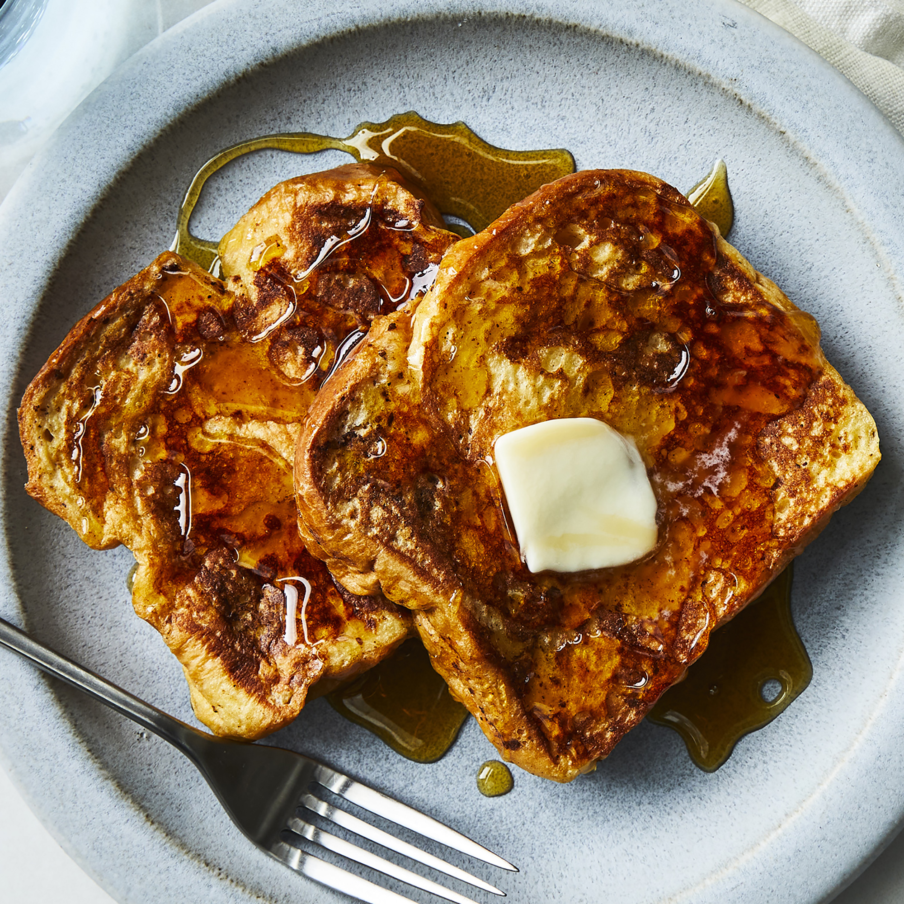

French Toast

Description
French toast is a delicious breakfast recipe consisting of bread, eggs, milk, vanilla and cinnamon, salt, and butter.
Ingredients
- 2⁄3 cup milk
- 2 large eggs
- 6 thick bread slices
- 1 tablespoon unsalted butter, or more as needed
- 1 teaspoon vanilla extract (Optional)
- 1⁄4 teaspoon ground cinnamon (Optional)
- Salt to taste
Steps
- Whisk milk, eggs, vanilla, cinnamon, and salt together in a shallow bowl.
- Lightly butter a griddle and heat over medium-high heat.
- Dunk bread in the egg mixture, soaking both sides. Transfer to the hot skillet and cook until golden, 3 to 4 minutes per side. Serve hot.